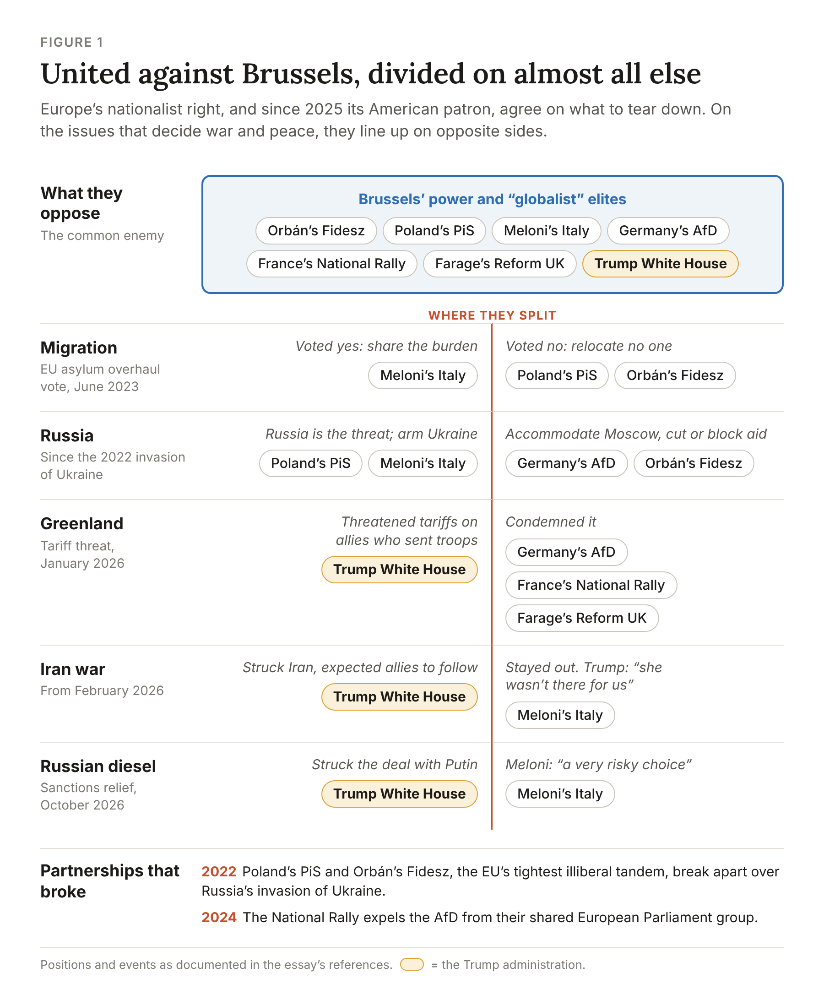
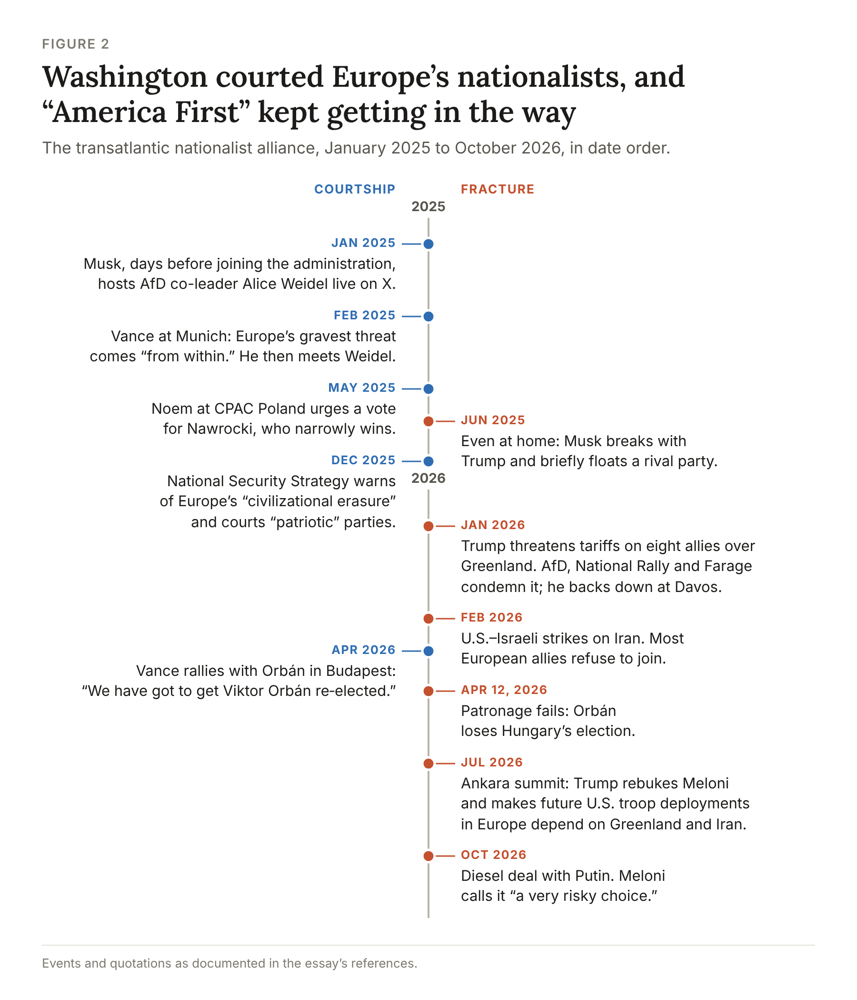
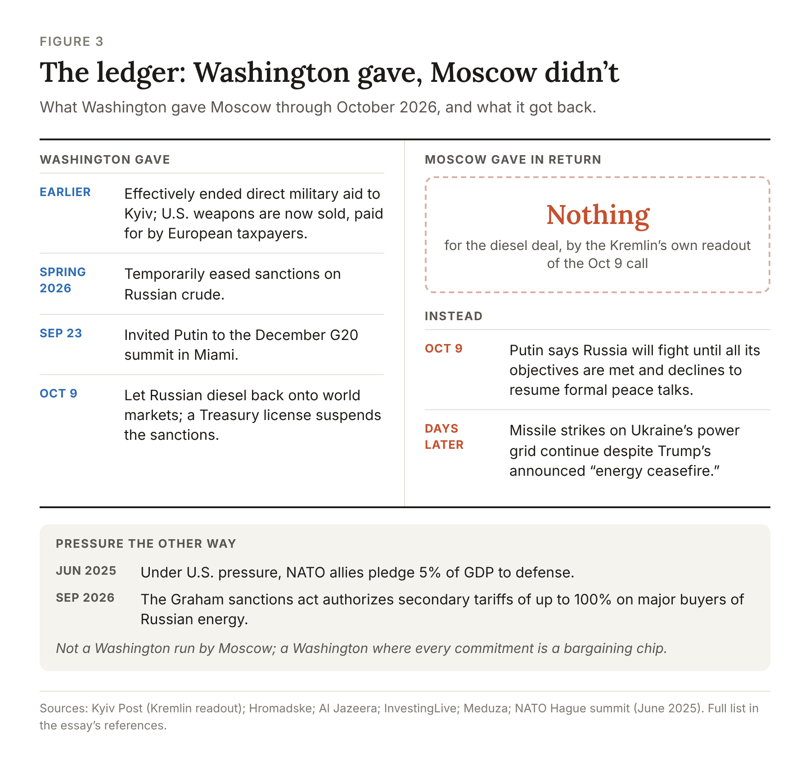
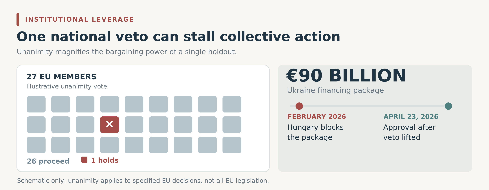
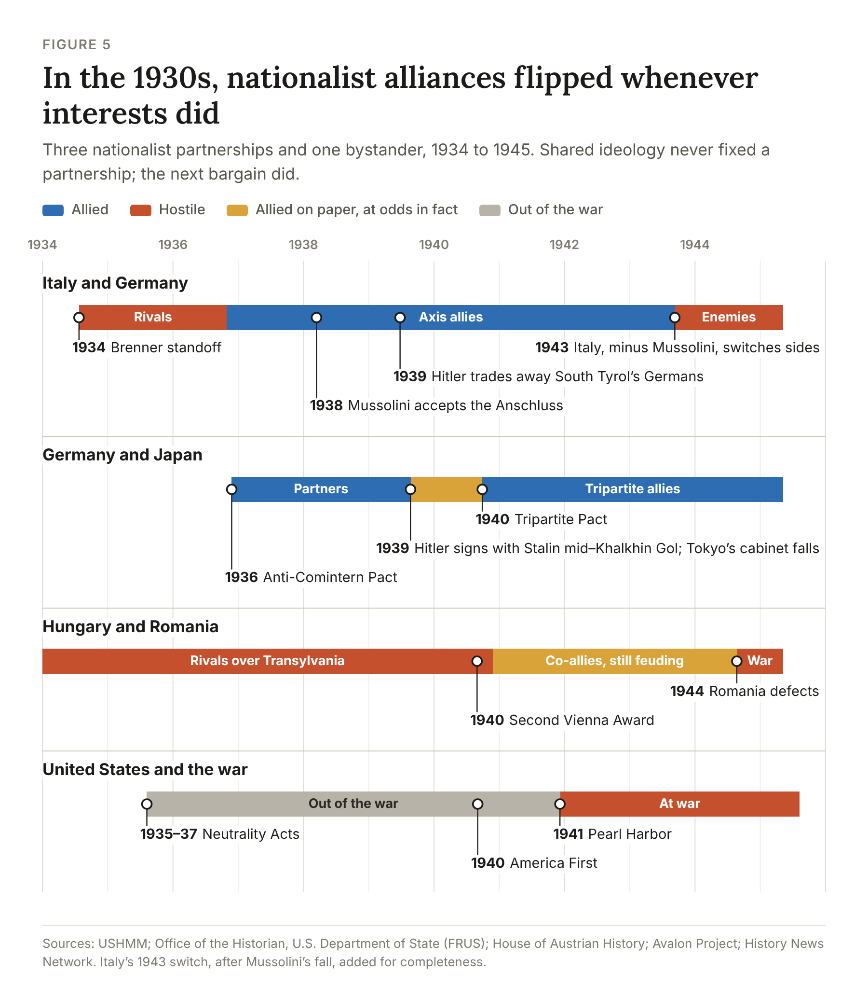
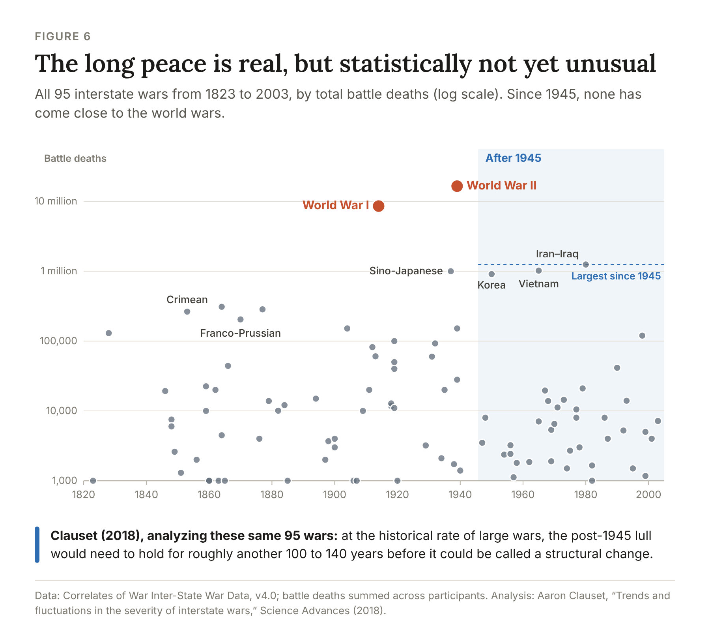
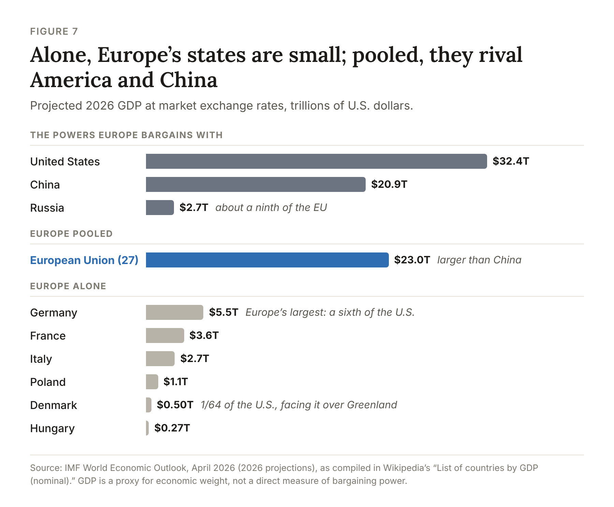

Avrupa’da ve Amerika’da tuhaf bir önerme etrafında yeni bir siyasi enternasyonal şekilleniyor: Her ulus önce kendini düşünmeli. Budapeşte’den Washington’a milliyetçi liderler birbirlerinin seçim zaferlerini kutluyor, birbirlerinin söylemini ödünç alıyor ve “küreselci” diye yerden yere vurdukları kurumlara karşı aynı safta duruyor. Egemenliği geri getirmeyi, sınırları korumayı ve gücü uluslararası bürokrasilerin elinden geri almayı vaat ediyorlar. Ortaya çıkan görüntü, Batı’yı yeniden biçimlendirebilecek tutarlı bir siyasi hareket.
Ne var ki ulusal önceliği esas alan bir koalisyonun içinde, hiçbir ideolojik dayanışmanın çözemeyeceği bir çelişki yatıyor. Ulusal çıkarlar birbirinin yerine geçmez. Bir ülkeyi güçlendiren şey bir başkasını zayıflatabilir. Milliyetçilerin yıkmaya çalıştığı kurumlar da çoğu zaman, birbiriyle yarışan ulusal çıkarların barış içinde yan yana durmasını sağlayan mekanizmaların ta kendisidir.
Kısacası milliyetçilerden taktik müttefik olur, kalıcı dost asla. Koalisyonları, şikâyetleri örtüştüğü sürece ayakta kalır; dayanışmanın bir bedeli çıktığı anda çatlar.
Ortada küçük bir mesele yok. En güçlü milliyetçi hükümet artık Washington’da oturuyor ve en ağır sınava soktuğu ittifak, yani Amerika’nın Avrupa’ya verdiği güvenlik taahhüdü, seksen yıldır kıtanın istikrarını ayakta tutuyor. Vladimir Putin açısından milliyetçi hareketin Rusya’nın işine yaraması için başarılı olması gerekmiyor. Hatta önce Batı’yı bir arada tutan kurumları zayıflatması şartıyla, başarısız olması Moskova’nın daha da işine yarayabilir.
1. Milliyetçiler Çıkar Ortağı Olur, Asla Dost Olmaz
Avrupa’nın milliyetçi partileri Brüksel karşıtlığında buluştu. Ulusüstü otoriteye, liberal göç politikalarına ve sıradan vatandaştan kopuk diye resmettikleri siyasi elitlere karşı çıkıyorlar. Ama konu neye karşı olduklarından gerçekte ne istediklerine geldiğinde bu birlik çok daha az etkileyici görünüyor.
İtalya göçün yönetiminde Avrupa’dan daha fazla dayanışma beklerken Polonya ile Macaristan zorunlu göçmen dağıtımına direniyor. Polonya’nın milliyetçi sağı Rusya’yı varoluşsal bir güvenlik tehdidi sayıyor; Almanya’daki Alternative für Deutschland (AfD) ise Moskova’yla ilişkilerin onarılmasından yana.
Bu ayrılıklar, doğal görünen ortaklıkları şimdiden bozdu. Polonya’nın Hukuk ve Adalet Partisi ile Macaristan’ın Fidesz’i bir zamanlar Avrupa’daki illiberal ittifakın iki direğiydi; 2022’de Rusya Ukrayna’yı işgal edince sert biçimde yollarını ayırdılar. İki yıl sonra Marine Le Pen’in Ulusal Birlik partisi de Almanya’daki AfD ile bağını kopardı. Bu kopuş, AfD’nin Avrupa Parlamentosu’ndaki ortak gruplarından ihraç edilmesinde payı olan etkenlerden biriydi.

Avrupa’nın milliyetçi sağı ne disiplinli bir blok ne de zararsız bir güruh. Ortadaki şey bir karşıtlık koalisyonu: Yıkmak istediği kurumlarda hemfikir, yerlerine neyin geleceği konusunda bölünmüş.
2. “Önce Amerika”, “Önce Biz” Diyen Herkesle Çatışıyor
2025’ten bu yana hareketin ağırlık merkezi Washington’a kaydı (Şekil 2). Başkan Yardımcısı JD Vance, Münih Güvenlik Konferansı’nda Avrupa için en büyük tehdidin "içeriden" geldiğini söyledi. Aralık 2025 tarihli Ulusal Güvenlik Stratejisi, Avrupa’yı "medeniyetin silinmesi" tehlikesine karşı uyardı ve Rusya’yı tehdit olarak anmaktan kaçındı. Nisan 2026’ya gelindiğinde Vance, Budapeşte’de Viktor Orbán için kampanya yapıyordu.

Derken Grönland meselesi patlak verdi. Ocak 2026’da Trump, Danimarka’nın talebi üzerine adaya asker gönderen sekiz Avrupalı müttefiki giderek artan gümrük vergileriyle tehdit etti. Avrupa’nın milliyetçileri "Önce Amerika" sloganının harfiyen geçerli olduğunu o zaman anladı. AfD Washington’ın "Vahşi Batı yöntemlerini" kınadı, Ulusal Birlik Brüksel’i misillemeye çağırdı, Nigel Farage da olanları "son derece düşmanca bir hareket" diye niteledi. Trump Davos’ta geri adım attı ama iş işten geçmişti: Amerikan milliyetçiliği, Avrupa’nın milliyetçilerini ittifaktan uzaklaştırmıştı. Moskova’nın görmek istediği soğukluk da tam olarak buydu.
Bunu kişilik çatışmalarına bağlamak yanlış olur. "Önce Amerika", "Önce Fransa" ve "Önce Macaristan", sınırlı pazarlar, enerji, toprak ve güvenlik üzerinde birbiriyle yarışan taleplerdir. Bu sloganlar üzerine kurulan hareketler, bir ulusun başka bir ulus için risk göze almasını gerektiren bir ittifakı sürdüremez. Oysa kriz anında işe yarayan tek ittifak türü budur.
3. Moskova’ya Bölünmüş ve Öngörülemez Bir Batı Yeter
Rusya’nın Batı’daki sağa kur yapmasının ardında basit bir hesap var. AB, NATO ve ABD birlikte hareket ettiğinde Rusya’nın ekonomisini de ordusunu da gölgede bırakıyor. Moskova bu koalisyonu cepheden yenemez, o yüzden onu içeriden çürütüyor.
Kremlin de yatırımını buna göre yaptı. Bu yatırım, 2014’te Le Pen’in partisine verilen 9,4 milyon euroluk krediden, Rusya’nın devlet yayın kuruluşu RT’nin çalışanlarının Amerikalı yorumculara aktardığı 10 milyon dolara yakın paraya kadar uzanıyor; o yorumcular paranın kaynağını hiç bilmiyordu. Yine de milliyetçi dalga bir Rus operasyonu değil. Seçmenler yerinde sayan ücretlere, ulaşılmaz konut fiyatlarına ve kaygılarına tepeden bakarak karşılık veren elitlere isyan ediyor. Bu fay hatlarını Moskova yaratmadı; yalnızca onlardan yararlanıyor.
Asıl büyük ödül ise Washington’da. Kremlin’in Rusya’ya sadık bir Amerikan yönetimine ihtiyacı yok. Müttefiklerinin, taahhütlerine uyup uymayacağını kestiremediği bir yönetim ona yeter. Ekim 2026 bunun nasıl işlediğini gösterdi (Şekil 3). ABD’de motorin fiyatları İran savaşı başladığından beri %60’tan fazla artmıştı ve ara seçimlere birkaç hafta kalmıştı. 9 Ekim’de Trump, Putin’le telefonda görüştü. Kremlin’in görüşmeye dair kendi açıklamasına göre bile Putin masaya hiçbir şey koymadı. Aynı gün Washington, Rus motorininin dünya piyasalarına geri dönmesine izin verdi.

Washington ters yönde de bastırdı: Rus enerjisi alanlara ikincil gümrük vergileri uygulanmasının önünü açtı, müttefiklerini de NATO’da %5’lik savunma harcaması taahhüdüne zorladı. Yani karşımızdaki, Moskova’nın kontrolündeki bir Washington değil. Yaptırımları, silahları, hatta NATO’nun karşılıklı savunma sözü olan 5. Madde’nin güvenilirliğini bile pazarlık kozu gibi kullanan bir Washington. Mevcut düzeni değiştirmek isteyen bir Kremlin için, güvenceleri seçim döneminde pazarlığa açılabilen bir süper güç, müttefikten sonra gelebilecek en iyi şeydir.
4. Tek Bir Ülke Bütün İttifakı Rehin Alabilir
Avrupa’nın kurumları, tek başına direnen bir ülkenin gücünü katlıyor. AB’de dış politika, yaptırımlar ve genişlemeyle ilgili kararlar hâlâ 27 üye devletin hepsinin onayını gerektiriyor. Bu yüzden tek bir hükümet, engel çıkarmayı pazarlık gücüne çevirebiliyor. Orbán bunun nasıl yapıldığını gösterdi (Şekil 4). Şubat 2026’da, Ukrayna’nın iflas etmemesi için öngörülen 90 milyar euroluk krediyi bloke etti ve Kiev’in önce Druzhba boru hattından Rus petrolü akışını yeniden başlatmasını şart koştu. Kredi ancak Orbán 12 Nisan seçimini kaybettikten sonra onaylandı.

Ama Batı’daki en belirleyici veto Washington’ın elinde ve bu veto hayır oyuyla değil, şüphe yaratarak kullanılıyor. Pentagon Almanya’dan ve Romanya’dan asker çekiyor, Avrupa genelindeki konuşlanmasını da gözden geçiriyor. Moskova, Washington’ın harekete geçme iradesinden şüphe etmeye başladığı an caydırıcılık zayıflar.
5. 1930’lar Gösteriyor: Milliyetçi İttifaklar İlkeye Değil Çıkara Bakar
1930’ların dersi, milliyetçi ve aşırı sağcı rejimler arasındaki ittifakların hiçbir zaman sabit olmadığıdır. Dönemin ideolojik olarak birbirine en yakın hükümetleri bile defalarca ortaklıktan düşmanlığa, düşmanlıktan ortaklığa geçti: İtalya ile Almanya, Almanya ile Japonya, Macaristan ile Romanya. Bu saf değiştirmelerin büyük kısmı barış zamanında, Avrupa savaşa girmeden yıllar önce yaşandı. Her ortaklığı bir arada tutan şey ortak ilkeler değil; toprak, kaynaklar ve zamanlamaydı (Şekil 5).

6. Seksen Yıllık Sükûnet Kırılgan Bir Barışı Gizliyor Olabilir
Dağılan bir ittifak gerçekten büyük bir savaşa yol açabilir mi? Önce kayıtlara bakalım (Şekil 6). Devletler arası savaşlar hiçbir zaman durmadı. 1823 ile 2003 arasında 95 savaş çıktı, bunların 38’i 1945’ten sonra. Savaş sonrası çatışmalardan üçünde, Kore Savaşı’nda, Vietnam Savaşı’nda ve İran-Irak Savaşı’nda, her birinde bir milyon civarında asker öldü. Duran şey, bu tür çatışmaların tırmanıp dünya savaşına dönüşmesiydi.
Bu gerçek bir başarı, ama henüz kanıtlanmış değil. Kayıtların tamamını inceleyen bir istatistiksel analize göre 1945 sonrasındaki sakin dönem hâlâ bir şans serisi olabilir. Yapısal bir değişim sayılabilmesi için 100 ila 140 yıl daha sürmesi gerekiyor.

7. Tek Başına Kalan Ulus Özgürleşmez, Zayıflar
Milliyetçi vaadin kalbindeki aldatmaca şu iddia: Brüksel’den ya da NATO’dan çekip gitmek, orta büyüklükteki ulusları kendi kaderlerinin efendisi yapacakmış. Bu iddia ekonomiyi tam tersinden okuyor. Kıta ölçeğindeki güçlerin dünyasında pazarlık gücü büyüklükten gelir. Avrupa’nın en büyük ekonomisi Almanya, ABD’nin aşağı yukarı altıda biri büyüklüğünde; bir bütün olarak AB ise Çin’den büyük.
Avrupa’nın savaş sonrası kurumlarını kuran realistler, İkinci Dünya Savaşı’nın enkazından daha yeni çıkmıştı. Tek başına duran orta büyüklükteki ülkelerin egemen olmadığını, haritadaki en büyük zorbanın lokması olduğunu biliyorlardı. Egemenliği ortak bir havuzda toplayarak yalnız yürümenin gösterişinden vazgeçtiler, karşılığında gerçek güç elde ettiler (Şekil 7).

Danimarka Grönland’ı kendi gücüyle değil, müttefiklerinin dayanışmasıyla elinde tuttu. Ulusal Birlik’ten Jordan Bardella da Amerikan gümrük vergileriyle karşılaşınca Brüksel’in zorlama karşıtı aracına, yani AB’nin ekonomik baskıya karşılık verme mekanizmasına sarıldı. Egemenliği her şeyin önüne koyan söylem, tek başına hareket etme özgürlüğünü sonuçları belirleme gücüyle karıştırıyor.
8. Kurtları Ancak Kalıcı Setler Uzak Tutar
Tek bir liderin işine geldiği için ayakta duran bir set, ancak o liderin işine geldiği sürece dayanır. NATO, AB ve Amerika’nın güvenlik garantisi hiçbir liderin keyfine bağlı kalmasın diye kuruldu. Müttefiklerin birbirine düşmesini önlerler ve her saldırgana, karşısında dünyanın en zengin bloğunun birleşik gücünü bulacağını garanti ederler.
Şimdi bu seti, korumak için kurulduğu milliyetçi hükümetler içeriden aşındırıyor. Avrupa yeniden silahlanıyor: NATO’nun Avrupalı üyeleri ve Kanada, 2025’te savunma harcamalarını yaklaşık %20 artırdı. Ama Avrupa’nın, bir caydırıcılık açığı doğmadan Amerikan kabiliyetlerinin yerini doldurup dolduramayacağı hâlâ cevapsız bir soru.
Milliyetçi enternasyonal çelişkilerini asla çözemeyecek, çünkü üyelerinin çıkarları gerçekten çatışıyor. Moskova için bütün mesele de bu. Rusya’nın, Avrupa’nın milliyetçilerinin birbiriyle anlaşmasına ihtiyacı yok; Avrupa’nın birlikte hareket etmesini sağlayan kurumlara güvenmemeleri yeterli. Washington’ın müttefiki olmasına da ihtiyacı yok. Amerikan güvencelerinin, Rusya’nın bir zamanlar uzak durduğu riskleri göze alınmaya değer gösterecek kadar muğlaklaşması yeterli.
Demek ki tehlike, milliyetçilerin kalıcı yeni bir düzen kurması değil. Kuramayacaklar. Tehlike, birbirlerine düşmeden önce kurtları seksen yıldır dışarıda tutan çiti yıkmaları. O düzeni kurmak iki dünya savaşına mal oldu; yeniden kurmak çok daha zor olabilir.
Kaynaklar
1930'lar
- USHMM: Nazi Territorial Aggression: The Anschluss (Temmuz 1934 darbe girişimi ve 1938'deki ilhak)
- German History in Documents and Images: Mussolini'nin Brenner Geçidi'ndeki birlikleri, 1934
- FRUS 1938, cilt I: Phillips'in, Mussolini'nin Anschluss'u kabullendiğini bildiren telgrafı (16 Mart 1938)
- USHMM: Axis Powers in World War II (Etiyopya yaptırımları, Anti-Komintern Paktı ve Üçlü Pakt)
- House of Austrian History: 1939, Güney Tirol üzerine Hitler-Mussolini Paktı
- USHMM: Romania (İkinci Viyana Hakemliği, Ağustos 1944'te saf değiştirme)
- Avalon Project: Romanya ile Barış Antlaşması, 1947, Madde 2 (Viyana Hakemliği'nin iptali)
- FRUS 1939, cilt IV: Hiranuma kabinesi Alman-Sovyet Paktı yüzünden istifa ediyor (29 Ağustos 1939)
- History News Network: Stuart Goldman, The Forgotten Soviet-Japanese War of 1939
- Office of the Historian: The Neutrality Acts, 1930s
- USHMM: America First Committee (1940–1941)
- Viereck v. United States, 318 U.S. 236 (1943) ve TIME: The Memory of Fish (1942) (Kongre üyelerinin ücretsiz posta ayrıcalığıyla dağıtılan propaganda)
Avrupa'nın milliyetçi sağı ve Rusya
- Euronews: AB ülkeleri göç kurallarında anlaşmaya vardı (8 Haziran 2023)
- Euronews: Kaczyński, Macar müttefiki Orbán'ı Ukrayna yüzünden eleştirdi (8 Nisan 2022)
- Al Jazeera: Almanya'daki AfD, Avrupa Parlamentosu'ndaki aşırı sağ gruptan ihraç edildi (23 Mayıs 2024)
- AFP via The Local: Fransız aşırı sağ partisi Rus kredisini geri ödediğini açıkladı (21 Eylül 2023)
- Reuters via Swissinfo: Çekya, AB siyasetindeki Rus yanlısı nüfuz nedeniyle Medvedçuk'a ve bir haber sitesine yaptırım uyguladı (27 Mart 2024)
- ABD Adalet Bakanlığı: İki RT çalışanı, bir ABD şirketini gizlice finanse etmekle suçlandı (4 Eylül 2024) ve CNN: Yorumcular Rus finansmanından habersizdi
- Carnegie: Dimitar Bechev, Will the Far Right Change Europe's Russia Policy? (23 Eylül 2026)
Amerikan sağı ve Avrupa
- Christian Science Monitor: Vance, Avrupalı liderlere aşırı sağa karşı güvenlik duvarı örmeyi bırakmalarını söyledi (15 Şubat 2025)
- Lawrence Freedman: Avrupa, Trump'ın Ulusal Güvenlik Stratejisi'ne nasıl karşılık vermeli? (10 Aralık 2025) (Vance'in "içeriden" sözü; Kremlin'in tepkisi)
- Notes from Poland: Noem, CPAC Polonya'da Nawrocki'ye destek verdi (27 Mayıs 2025)
- Lawfare: Trump yönetimi 2025 Ulusal Güvenlik Stratejisi'ni yayımladı (5 Aralık 2025) ve Global News: Stratejideki "medeniyetin silinmesi" ifadesi
- Christian Science Monitor: Trump'ın ulusal güvenlik stratejisi eski müttefikleri tehdit gibi görüyor (8 Aralık 2025)
- Bloomberg via Boston Globe: Trump'ın Grönland hamlesi Avrupa'nın aşırı sağı için bile fazla (Ocak 2026) (AfD'nin Washington ziyaretleri, Weidel, Chrupalla, Bardella)
- The National Desk: Vance Macaristan'ı ziyaret ederken Trump, Orbán için "sonuna kadar yanındayım" dedi (7 Nisan 2026)
- CBS News: Trump, Grönland'a asker gönderen ülkelere gümrük vergisi uygulayacak (17 Ocak 2026)
- AP: Trump'ın Grönland hevesi MAGA'nın Avrupa'daki aşırı sağla bağlarını geriyor (Ocak 2026)
- Reuters: Avrupa'nın aşırı sağı ve popülistleri Grönland yüzünden Trump'la arasına mesafe koyuyor (21 Ocak 2026)
- Bloomberg: Trump, Grönland'da "çerçeve" anlaşmanın ardından gümrük vergisi tehdidinden vazgeçti (21 Ocak 2026)
- Reuters via Chronicle.lu: ABD ve İsrail'in 28 Şubat 2026'da başlattığı İran savaşı
- Adnkronos: Trump, Ankara zirvesinde Meloni için "bizim yanımızda değildi" dedi (7 Temmuz 2026)
- Wikipedia: Trump–Musk feud
Washington, Moskova ve Ukrayna, 2026
- Kyiv Post: Kremlin'in 9 Ekim'deki Trump-Putin görüşmesine dair açıklaması
- Ukrainska Pravda: Trump, Ukrayna'nın yeni bir devlet başkanı seçme zamanının geldiğini söyledi (10 Ekim 2026)
- InvestingLive: Trump, motorin anlaşmasından iki gün sonra enerji ateşkesi ilan etti (11 Ekim 2026)
- NPR via OPB: İki partiden senatörler Trump'a Rus motorini anlaşmasını iptal etme çağrısı yaptı (13 Ekim 2026)
- Kyiv Independent: Meloni, motorin anlaşmasının Moskova'yı meşrulaştırdığını söyledi (14 Ekim 2026) ve Reuters via Al-Monitor: "Çok riskli bir tercih"
- Brussels Signal: Motorin fiyatları, enerji ateşkesi ve Meloni'nin uyarısı (Ekim 2026)
- NV: Meloni, Putin'in G20'ye davet edilmesine karşı çıktı (24 Nisan 2026)
- Al Jazeera: Trump yönetimi Putin'i Miami'deki G20 zirvesine davet etti (23 Eylül 2026)
- Hromadske: ABD, Rus petrolüne yönelik yaptırımları önce gevşetti, sonra yeniden yürürlüğe koydu (Mart–Mayıs 2026)
- Meduza: Trump, Lindsey O. Graham Sanctioning Russia and Iran Act'i imzaladı (Eylül 2026)
- PISM: The Ankara Summit, a step towards the Europeanisation of NATO (Temmuz 2026)
- CNN via KVIA: Trump, Avrupa'daki asker sayısını üçte bir azaltmayı aklından geçirmiş (6 Temmuz 2026)
Macaristan, 90 milyar euroluk kredi ve AB'de oybirliği
- European Pravda: AB liderleri, Orbán'ın 90 milyar euroluk krediyi engellemesini "kabul edilemez" buldu (20 Mart 2026)
- Bloomberg: Orbán çıkışa yürürken Ukrayna 90 milyar euroluk AB kredisini alacak (22 Nisan 2026)
- Euronews: Macaristan vetoyu kaldırınca AB 90 milyar euroluk krediyi onayladı (23 Nisan 2026)
- Xpatloop: Magyar, Macaristan'ın Ukrayna'ya askerî yardım yapmayacağını söyledi (9 Temmuz 2026)
- European Pravda: Zelenski, Magyar'la ilk kez baş başa görüştü (16 Ekim 2026)
- Reuters via ThePrint: Macaristan ile Ukrayna ilişkileri sıfırlamakta anlaştı (16 Ekim 2026)
- Istituto Affari Internazionali: Shadows of Unanimity, AB dış ve güvenlik politikası üzerine (Temmuz 2026)
- Euronews: 11 AB ülkesi dış politikadaki engelleyici vetolara son verilmesini istedi (1 Eylül 2026)
Uzun vadede savaş ve barış
- University of Colorado Boulder: Nothing unusual about the long peace since WWII; Aaron Clauset'in Science Advances dergisinde yayımlanan "Trends and fluctuations in the severity of interstate wars" (2018) makalesi üzerine
- Bear F. Braumoeller, Only the Dead: The Persistence of War in the Modern Age (Oxford University Press, 2019)
- Correlates of War Project: COW War Data, 1816–2007 (v4.0) (Şekil 6'nın dayandığı devletler arası savaş verileri)
- Wikipedia: List of countries by GDP (nominal) (Şekil 7'nin dayandığı IMF Dünya Ekonomik Görünüm raporu, Nisan 2026 tahminleri)
Yorumlar